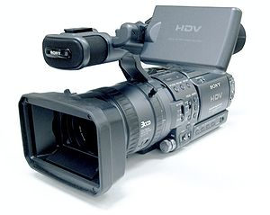

Técnico en Realización de Audiovisuales y Espectáculos
Ciclo Superior
En este ciclo aprenderás a coordinar el desarrollo de realizaciones de televisión, cine, espectáculos, representaciones escénicas y productos multimedia. Además, aprendes a montar, editar y postproducir.

- Realización en cine y vídeo
- Realización en televisión
- Realización en multimedia
- Montaje/edición y postproducción de audiovisuales
- Representaciones escénicas y espectáculos
- Comunicación y expresión audiovisual
- Sistemas técnicos de realización
- Relaciones en el Entorno de Trabajo
- Formación y Orientación Laboral
- Formación en Centros de Trabajo (F.C.T.)
Puestos de trabajo más relavantes:
- Técnico en realización de televisión
- Técnico en dirección de cine
- Secretario de rodaje
- Técnico en montaje cinematográfico
- Técnico mezclador de vídeo y operador de postproducción
- Auxiliar de transmisiones por satélite
- Operador de unidad móvil
- Operador de steadycam
- Rotulador
- Diseñador de grafismos
- Script
- Regidor
- Ayudante de realización
- Realizador
- Ayudante de dirección y director